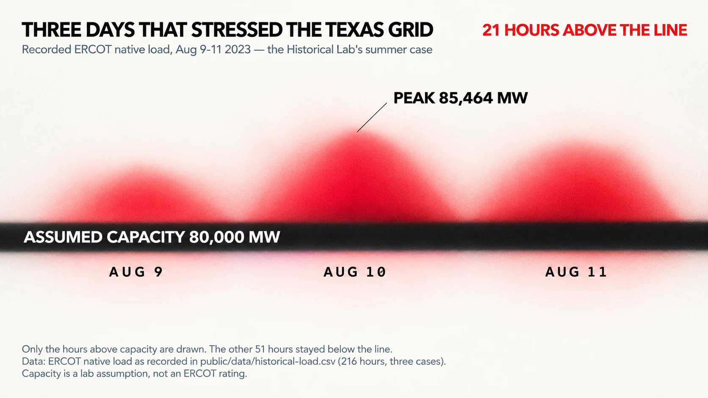
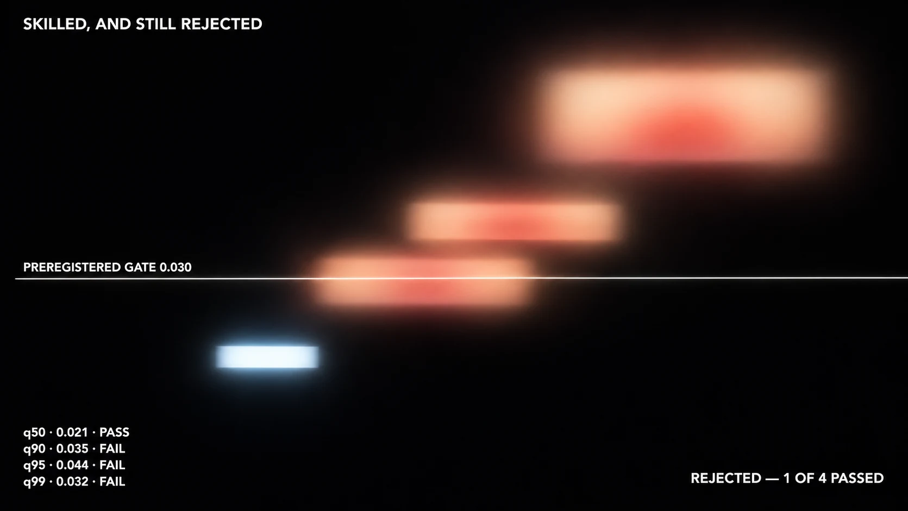
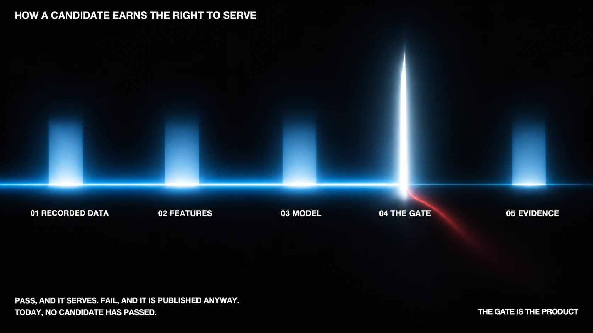

The problem
Grids fail in the tail
A grid does not fail on the average day; it fails in the tail. GERT exists to make tail risk — and the model’s own untrustworthiness — visible at the same time, and to refuse service when the model has not earned it. The PJM cold-event benchmark, written out in the evidence below, asks the companion question: can interval calibration learned from past cold spells be transferred to the next one?
What I built
A gate the model cannot argue with
- A FastAPI backend and a Next.js frontend. The current candidate, ercot-delta-quantile-v1.4, is a quantile model of load change. The calibration gate was written before the evaluation window was opened.
- The public Historical Lab: 216 hours of measured ERCOT load in three 72-hour windows. Every result can be downloaded and independently recomputed; no account is required. Official site gertgrid.space; tool gert-d.vercel.app.
- The PJM-Cold-Calibration-Benchmark: four extreme cold events, 3 model classes × 5 calibrators, each evaluated chronologically and by leave-one-event-out. The protocol is published in the benchmark’s preregistration/.
Evidence
What can be checked
- v1.4 calibration record. Against the pre-set gate of absolute coverage error ≤ 0.03, the recorded errors are Q90 0.035417, Q95 0.04375, Q99 0.031667. Source: decision record and the evidence JSON.
- Pinball skill. Pinball skill against the frozen seasonal baseline ran +0.76 to +0.84 across quantiles. Source: the same decision record.
- Historical Lab: 216 hours. In the summer-2023 window at an assumed 80,000 MW capacity, observed load exceeds capacity for 21 hours (66,683 MWh unserved-energy proxy); with a 5% load reduction, 7 hours and 4,458 MWh. Sources: dataset DOI 10.5281/zenodo.22975251 and the lab.
- Tests: 142 backend and 51 frontend, passing on 2026-11-17 — the tool site’s own footer, gert-d.vercel.app. The earlier count, 141 backend and 50 frontend on 2026-11-09, is kept in the claim index.
- Archives. Software: DOI 10.5281/zenodo.23982226 (v1.2.0, 2026-11-05). Dataset: DOI 10.5281/zenodo.22975251 (v1, 2026-09-26).
- PJM cold-event benchmark. Day-ahead QR-GBT 90% interval coverage was 12.5% during the 2014 polar vortex, against 65.7% over the 2014 evaluation period. Retrospective leave-one-event-out evaluation reports coverage differences of +11.6 and +21.2 percentage points against chronological evaluation. Sources: benchmark repository and DOI 10.5281/zenodo.24010850.
- Community sessions: Session 1 in May 2026 and Session 2 on 2026-09-08 (docs/FEEDBACK.md).
- Community ledger: 4 forwarded reports, 2 hands-on core completions (community page, updated 2026-09-25).
Timeline
Public record only
- 2026-02-10 — main repository created (GitHub record).
- 2026-05 — Historical Lab Session 1 pilot (docs/FEEDBACK.md).
- 2026-08-30 — v1.4 evidence published; the frozen evaluation window was 2026-08-21 to 2026-08-24 (96 hours).
- 2026-09-08 — Session 2.
- 2026-09-26 — dataset DOI published.
- 2026-11-05 — software DOI, v1.2.0.
- 2026-11-06 — PJM benchmark DOI.
- 2026-11-17 — tool footer: 142 backend and 51 frontend tests passing.
Media
Charts from the repository


The lab, monitor and review screens can be used directly at gert-d.vercel.app; PJM figures on this page are drawn from the public benchmark repository, not from any private paper repository.